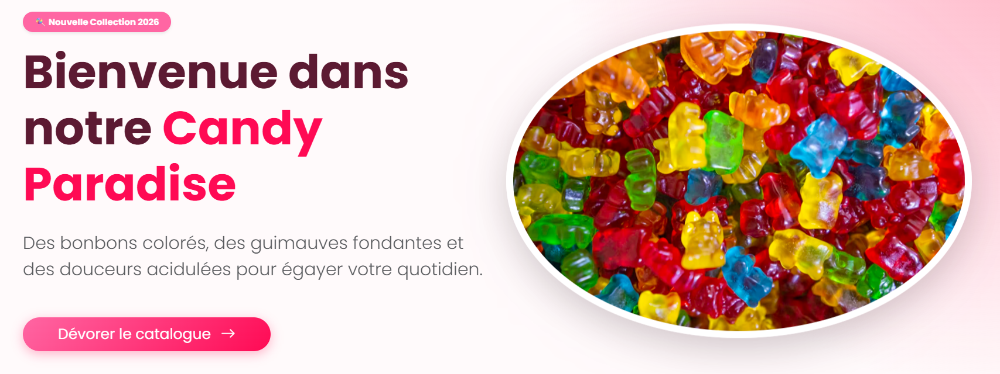
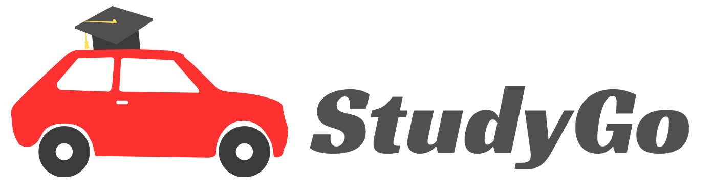
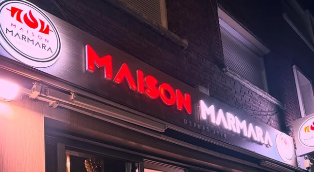

Ma philosophie
Transparence technique, robustesse du code et modularité. Chaque brique logicielle est posée avec une intention claire. Ma devise : « Pour être performant, il faut avant tout s'amuser. »
Recherche un stage de fin d'études · 3 mois
Développeur full-stack · Étudiant en BUT 3 Informatique
Je conçois des applications web et des jeux vidéo, de l'analyse du besoin jusqu'à la mise en production. Curieux, autonome et rigoureux, je m'investis dans des projets concrets.
Étudiant en 3e année de BUT Informatique, je maîtrise plusieurs langages déjà utilisés pour réaliser des applications, et j'aime en découvrir de nouveaux. Ma capacité d'analyse me permet d'identifier les besoins d'un projet ainsi que les problèmes que l'on pourrait rencontrer.
Transparence technique, robustesse du code et modularité. Chaque brique logicielle est posée avec une intention claire. Ma devise : « Pour être performant, il faut avant tout s'amuser. »
Analyse de compositions musicales, apprentissage autodidacte du game design et compétition sur Super Smash Bros. Ultimate : l'engagement et l'esprit d'équipe m'y passionnent.
Des langages, des outils et des qualités humaines que j'ai éprouvés en projet.
Je dissèque les problèmes avant d'écrire la moindre ligne de code.
Face aux obstacles techniques, je persévère jusqu'à l'aboutissement.
J'apprends seul en explorant la documentation et en expérimentant.
Je change de langage ou d'outil selon les besoins du projet.
Git, méthode Agile Scrum et communication fluide au quotidien.
Je dis ce qui fonctionne, ce qui bloque et ce qu'il reste à faire.
De la spécialité scientifique au lycée à la spécialisation en réalisation d'applications.
Parcours « Réalisation d'applications : conception, développement, validation ». Développement d'un jeu vidéo sous Unity en équipe et recherche d'un stage de fin d'études.
Site vitrine et menu interactif pour un restaurant, réalisés en autonomie, de l'analyse du besoin à l'intégration.
Architectures full-stack (PHP, JavaScript, Java), bases de données, projets StudyGo et Candy Paradise.
Premiers langages (HTML, CSS, SQL, C++, C#) et validation des premières compétences du référentiel.
Lycée Madeleine Michelis, Amiens. Spécialités Mathématiques et Numérique et sciences informatiques.
La multiplication des projets académiques et mon stage en deuxième année de BUT ont forgé mon socle de compétences en programmation. Surtout, ils m'ont confronté à la réalité du terrain et aux exigences du monde professionnel.
J'ai pris conscience d'un enjeu majeur : l'excellence technique n'est pas une fin en soi. Une architecture perd de sa valeur si elle ne répond pas précisément aux attentes. J'accorde donc une importance capitale à l'analyse des besoins, à la communication au sein d'une équipe et à la gestion rigoureuse du cycle de vie d'un projet.
Projets d'équipe, projets en solo et stage en entreprise. Cliquez sur un projet pour le détail.
Jeu de stratégie développé sous Unity (C#) en équipe de cinq : trois développeurs, un réseau et un data. Je participe à la création des fonctionnalités et de l'interface utilisateur.

Boutique en ligne avec gestion des produits, paniers et commandes, paiement sécurisé et tableau de bord d'administration.

Application web de covoiturage pour sécuriser et fluidifier les déplacements des étudiants vers les campus.

Site vitrine responsive avec menu interactif pour un restaurant, du cahier des charges à la mise en ligne.
Parcours, compétences et projets en une page. Je recherche un stage de fin d'études de 3 mois en développement.
Une offre de stage ou une collaboration ? Écrivez-moi, je réponds rapidement.
sandli.ilyes@gmail.com